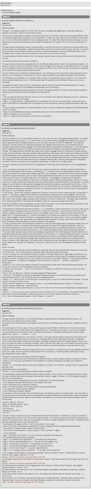

A Unified Nanopublication Model for Effective
and User-Friendly Access to the Elements of
Scientific Publishing
Cristina-Iulia Bucur1 , Tobias Kuhn2 , Davide Ceolin 3
1, 2 Vrije Universiteit Amsterdam, 3 Centrum Wiskunde&Informatika (CWI)
September 2020
These slides: http://bit.do/Linkflows-EKAW-Sept-2020
Scientific publishing: ancient paradigms still in place
- Long texts in natural language in formats like PDF
- Digitized, but not machine-interpretable
- Quality checking with peer reviews which are also long texts in natural language

| 
|
A nanopublication-style communication interaction

Research question
Can we use the concept of nanopublications as a unifying model to represent in a semantic and fine-grained way the elements of publications, their interrelations as well as their provenance and their assessments?
A nanopublication: a fine-grained provenance-aware Linked Data format
Nanopublication of a review comment
Nanopublication assertion of a review comment
Research questions (1)
- RQ1: Can we use nanopublications as a unifying data model to represent the structure, links and assessments of manuscripts in a precise, transparent, and provenance-aware manner?
- Evaluation:
- descriptive analysis on a small case study applying the model
Use case data: recent publications with their reviews from the Semantic Web Journal
| Elements of publication |
|
|
|
| articles
|
3
|
| reviewers
|
9
|
| sections
|
89
|
| paragraphs
|
279
|
| figures
|
11
|
| tables
|
10
|
| formula
|
8
|
| footnote
|
2
|
| review comments
|
213
|
|
| Nanopublications |
|
|
|
| Nanopublications
|
627
|
| RDF triples
|
10 437
|
| Total download time
|
11.66s
|
| Download time per nanopublication
|
18.6ms
|
|
Research questions (2)
- RQ2: Is a fine-grained semantic publishing and reviewing model able to provide editors with answers to common competency questions?
- Evaluation: competency questions (CQs)
- formalizations as SPARQL queries
- prototype of a fine-grained semantic analysis interface for editors
Competency questions from the editor's point of view:
- CQ1: What is the number of positive and negative comments per reviewer?
- CQ2: What is the number of and negative comments per section?
- CQ3: What is the distribution of review comments with respect to the content or presentation of the article?
- CQ4: What is the nature of the review comments with respect to whether they refer to a specific paragraph or a larger structure like a section?
- CQ5: What are the critical points raised by the reviewers?
- CQ6: How many points were raised that need to be addressed by the authors?
- CQ7: How do the review comment cover the different sections and paragraphs?
Research questions (3)
- RQ3: Can we design an intuitive and effective interface based on a fine-grained semantic publishing and reviewing model that supports journal editors?
- Evaluation: user study
- perceived importance of the defined CQs for editors
- perceived usefulness of the prototype for answering CQs
User study with editors
- Invitations sent to editors of Computer Science journals: PeerJ CS, Semantic Web, Data Science Journal
- 401 invitations sent, received a total of 42 answers (10.5%)
User study with editors: importance of CQs

User study interface: reviewer-oriented view
User study interface: section-oriented view

User study with editors: interface usefulness

Most of the CQs are considered important, while our interface is considered useful

Most of the CQs are considered important, while our interface is considered useful
| Competency Question |
Importance |
Usefulness |
| average |
p-value≥3 |
average |
p-value≥3 |
| CQ1 |
3.17 |
0.044* |
3.48 |
1.36e-4* |
Conclusions
- The different elements of scientific publishing can be represented in a fine-grained and semantic manner with nanopublications (RQ1)
- We can answer a set of CQs for editors using SPARQL queries (RQ2)
- Editors mostly find the defined CQs important and our prototype useful (RQ3)
Future work
- Extending our approach to represent the content of research findings
- Linking it to article quality
- Interfaces for reviewers and authors
Acknowledgements: thank you!
- IOS Press: Maarten Frohlich, Stephanie Delbeque
- Sound and Vision Insitute: Erwin Verbruggen, Johan Oomen
- Vrije Universiteit Amsterdam: Jacco van Ossenbruggen